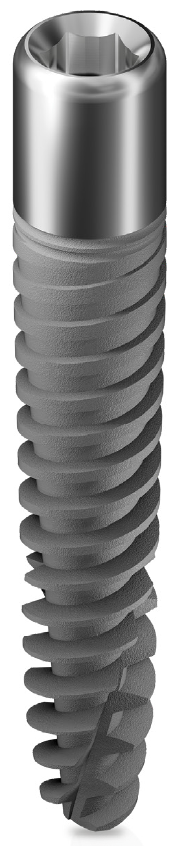
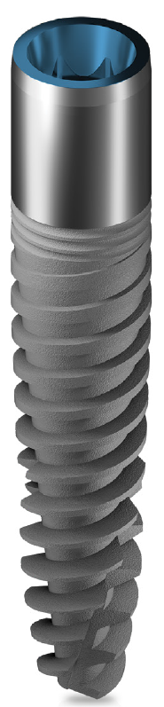
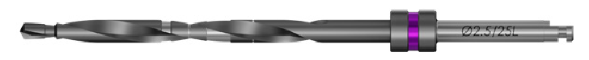
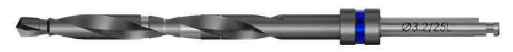
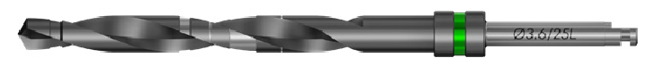

Мы рады сообщить вам о новых имплантатах повышенной длины.
Сверхдлинные имплантаты Adin можно эффективно использовать в качестве бикортикальной опоры, чтобы компенсировать недостаточность костной ткани, сохраняя стабильность имплантата в случаях, где имплантаты обычной длины не могут быть установлены.
Линейка сверхдлинных имплантатов обладает особыми свойствами для повышения эффективности. Например, узкая вершина для ограниченного пространства и гладкая шейка, лучше всего подходящая для увеличения десны.
| Ø, мм | L, мм | D3, мм | Артикул | |
|---|---|---|---|---|
|
 |
4.25 | 20.00 | 2.50 | ISF2042 |
| 22.50 | 2.50 | ISF2242 | ||
| 25.00 | 2.50 | ISF2542 |
| Ø, мм | L, мм | D3, мм | Артикул | |
|---|---|---|---|---|
|
 |
4.30 | 20.00 | 2.50 | ISPX2043 |
| 22.50 | 2.50 | ISPX2243 | ||
| 25.00 | 2.50 | ISPX2543 |
| L | Ø, мм | Описание | Артикул | |
|---|---|---|---|---|
|
длина |
1.8/2.5 |
 |
Сверхдлинное пилотное сверло |
DL2525 |
| 2.5/3.2 |
 |
Сверхдлинное спиральное двухшаговое сверло |
DL2532 | |
| 3.2/3.6 |
 |
Сверхдлинное спиральное двухшаговое сверло |
DL2536 |